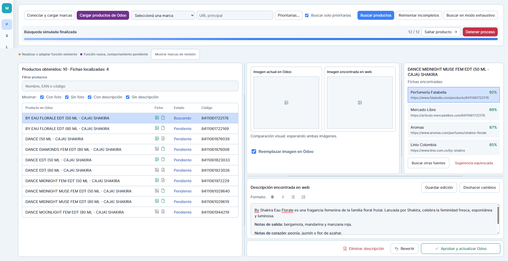

Capilar / coloración
AVANZADOEs el frente con más conocimiento estructurado acumulado. Color Age sumó 172 productos reales y confirmó el valor de trabajar con catálogo oficial precargado, familias, tonos exactos y fuentes complementarias.
El desarrollo ya dejó atrás la idea de un buscador genérico. El motor actual combina conocimiento específico por marca, catálogos ya relevados y búsquedas controladas para completar los productos reales de Almacén de Fragancias con mayor precisión.
Las últimas pruebas reforzaron una idea central: encontrar una ficha no alcanza. Hay que comprobar que corresponda exactamente al producto de AF y evaluar por separado qué tan confiables son la descripción y la imagen.
La estrategia actual parte de fuentes y catálogos ya estudiados por marca y utiliza la web para completar lo que falta. Una coincidencia por nombre o código ya no alcanza si contradice tono, presentación, pack, modelo o versión del producto.
También quedó claro que una fuente oficial puede ser correcta pero insuficiente: puede resolver la descripción sin aportar una foto útil, o confirmar una familia sin llegar a la variante exacta.
Agregar búsquedas y fuentes de forma indiscriminada. Aumentaba resultados irrelevantes, consumía tiempo de búsqueda y podía producir candidatos plausibles pero incorrectos.
Trabajar marca por marca: líneas, familias, variantes, presentaciones, códigos, catálogos oficiales y fuentes secundarias realmente útiles.
El desarrollo ya superó las cien iteraciones. El estado más reciente validado del motor es v5.8.0 · P3.1 · V100 · COLOR AGE FINAL VALIDATED. El conteo incluye builds, pruebas focalizadas, regresiones, experimentos y rondas específicas por marca.
La validación ya no se limita a comprobar si el motor encontró algo: se revisa el resultado visible que recibiría Sandra, incluyendo producto exacto, descripción utilizable, foto utilizable, fuente, advertencias y estado final.
Además, se consolidó una regla de entrega: no generar una nueva versión por pocos arreglos aislados. Antes de entregar un ZIP se exige una validación amplia sobre productos reales.
Es el frente con más conocimiento estructurado acumulado. Color Age sumó 172 productos reales y confirmó el valor de trabajar con catálogo oficial precargado, familias, tonos exactos y fuentes complementarias.
La cobertura mejoró, pero sigue siendo desigual entre marcas. Concentración, tamaño, edición y presentación exigen controles finos para no aceptar una ficha aparentemente correcta pero incompatible.
Las colecciones, familias técnicas, colores y productos antiguos o discontinuados obligan a separar con cuidado producto y variante. La descripción puede quedar resuelta mientras la foto todavía requiere validación independiente.
El problema dominante sigue siendo la variante exacta: tono, acabado, formato y tipo de producto. Incluso un EAN correcto puede confirmar identidad sin garantizar que la imagen publicada sea la variante correcta.
El motor está aprendiendo a separar identidad comercial, presentación y contenido descriptivo. Una publicación en pack puede aportar una descripción válida para la unidad sin que ese pack sea aceptado como producto final.
Modelos antiguos, versiones vendidas en distintos mercados y fuentes oficiales incompletas siguen limitando cobertura. Modelo y SKU pesan más que una coincidencia general por nombre.
Las fuentes estructuradas pueden resolver familias completas, pero presentación, pack y contenido común de línea no deben confundirse con la identidad exacta del producto.
“Marca cerrada” significa que, para los productos que actualmente existen en AF, ya se relevaron y probaron sus principales fuentes, estructura y reglas hasta un nivel suficiente para dejar de trabajar específicamente sobre ella. Puede reabrirse si aparece nueva información o un problema.
Fuentes, estructura y reglas trabajadas a un nivel suficientemente sólido para el inventario actual.
Se distinguieron productos actuales, otras presentaciones y productos antiguos o discontinuados, combinando fuentes web y documentación oficial.
Mostró que el sitio oficial puede no alcanzar cuando líneas, tonos o variantes no están publicadas con el detalle necesario.
Mostró el valor de partir de un catálogo conocido de la marca en lugar de depender de búsquedas generales; ese trabajo quedó consolidado para el inventario actual de AF.
El análisis permitió pasar de productos aislados a una lectura de su arquitectura comercial y reutilizar esa estructura para orientar búsquedas.
Se trabajó sobre los 172 productos reales de AF. La validación alcanzó 172/172 descripciones visibles. El PDF oficial 2026 resolvió la base descriptiva y la foto se continúa evaluando por separado.
El trabajo específico quedó pausado hasta contar con una base maestra suficientemente confiable para códigos, variantes, packs y productos discontinuados o reformulados.
Los modelos antiguos y las versiones vendidas en distintos mercados demostraron que una única fuente argentina no cubre todo el universo de productos.
La cobertura inicial fue limitada y obligó a ampliar fuentes y búsquedas basadas en modelos.
Productos antiguos o discontinuados, fuentes caídas y equivalencias de coloración/presentación siguen requiriendo investigación específica.
Se fijaron reglas para distinguir unidad, caja y pack cuando la publicación comercial puede inducir a error.
Se localizaron fuentes específicas y alternativas útiles para ampliar la cobertura.
Se incorporó una fuente específica de marca para mejorar la identificación.
Enseñó que una fuente oficial conocida puede no estar operativa y no conviene seguir consumiendo tiempo de búsqueda allí.
Había páginas oficiales útiles que el enfoque inicial no conseguía relacionar correctamente con AF.
Carolina Herrera, Dior, Dolce & Gabbana, Calvin Klein, Givenchy y otras marcas muestran una mejora concreta gracias a nuevas fuentes y búsquedas más dirigidas.
El problema actual ya no es simplemente “encontrar más”. El desafío es completar cada producto con información defendible: distinguir variantes y presentaciones, aprovechar una fuente aunque sólo resuelva una parte, seguir buscando cuando una fuente oficial es insuficiente y evaluar por separado la confiabilidad de descripción e imagen.
Un PDF o catálogo puede resolver perfectamente la descripción. Aun así, el motor debe continuar buscando una foto web exacta si la imagen todavía falta.
Pueden venir de fuentes distintas. Una descripción correcta no convierte automáticamente en correcta la foto publicada en esa misma fuente.
Cuando una ficha ofrece una galería ordenada, se toma como referencia la imagen principal publicada; no se reemplaza automáticamente por una imagen secundaria.
No se acepta otra presentación, tono, pack, modelo o versión sólo porque parezca equivalente. Si la evidencia exacta no alcanza, el producto queda pendiente.
No se genera una nueva versión por arreglar pocos casos aislados. Antes de entregar un ZIP se exige validación end-to-end amplia sobre productos reales.
Las pruebas del motor no modifican Odoo ni CatAF. En la aplicación, sólo “Aprobar y actualizar Odoo” puede escribir cambios.
El resultado es un motor menos orientado a “encontrar algo” y más orientado a presentar información que pueda defenderse frente al producto real existente en AF.
CatAF llegó a la versión visible 0.30.9 y amplió su función como herramienta de lectura y control del catálogo de Almacén de Fragancias.
Entre las incorporaciones recientes están Cobertura por marca, filtros de Foto, Descripción y Publicados, búsqueda por EAN, comparación de cambios de marcas y una revisión de productos cuya categorización puede ser dudosa. También puede marcar casos como “Correcto en CatAF” o “Mal en Odoo” y preparar exportaciones para revisión.
La clasificación “Prioritarias Web” sigue siendo un criterio interno de planificación, independiente de que una marca esté cerrada o abierta en Multimarca. CatAF continúa trabajando en modo de sólo lectura respecto de Odoo: identifica y organiza casos para revisar, pero no corrige automáticamente la base.
La UI Preview llegó a v0.1.23. La nueva organización reemplaza el encabezado por una barra lateral contraída que se expande sobre el contenido al pasar el cursor. El trabajo actual consiste también en definir las equivalencias entre cada control visible y las funciones y estados reales de la futura aplicación Debian.
El circuito previsto mantiene staging en el puerto 8113 y producción en el 8110. La producción sigue fuera de alcance hasta que la etapa de staging quede suficientemente validada.

El motor continúa en desarrollo y validación local. Color Age alcanzó V100 FINAL VALIDATED y mostró que una fuente estructurada puede resolver la descripción de forma muy amplia, mientras la foto sigue necesitando búsqueda y control específicos.
Thelma y Louise quedó pausada hasta contar con un catálogo maestro suficientemente confiable. En paralelo, perfumería está mejorando con nuevas fuentes y búsquedas más dirigidas, mientras WAHL, WMARK y Kostume siguen siendo frentes de cobertura difícil.
El próximo salto no consiste en agregar búsquedas indiscriminadamente, sino en trasladar al motor general las reglas que demostraron funcionar por marca, ampliar cobertura donde todavía hay huecos y llegar a staging con un comportamiento suficientemente estable para que Sandra pueda validar mejores opciones con menos investigación manual.